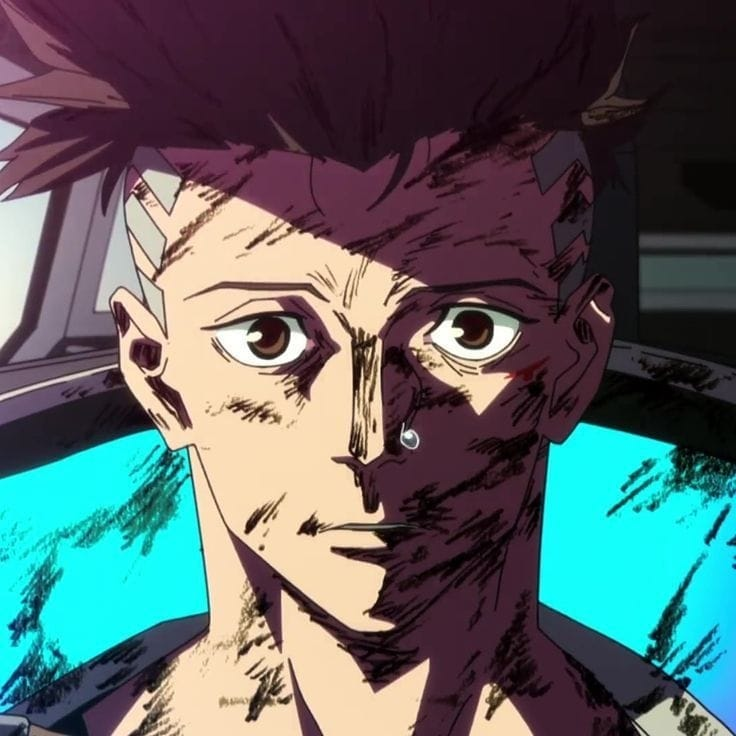

ชื่อ-นามสกุล: อธิชนนท์ อารีฟี
ชื่อเล่น: วา
สาขาวิชา: วิศวกรรมคอมพิวเตอร์และปัญญาประดิษฐ์
กลุ่มเรียน: 1
อยากสร้างเว็บที่ทำงานได้ครบทั้ง Frontend และ Backend
ได้ทักษะพัฒนาเว็บเพื่อนำไปสร้างโปรเจกต์จริง
ยังขาดทักษะออกแบบโครงสร้างโปรแกรม แนวทางคือฝึกโค้ด ศึกษาเอกสาร และเรียนรู้ Framework
ได้แรงบันดาลใจจาก: Dino Directory (Natural History Museum)